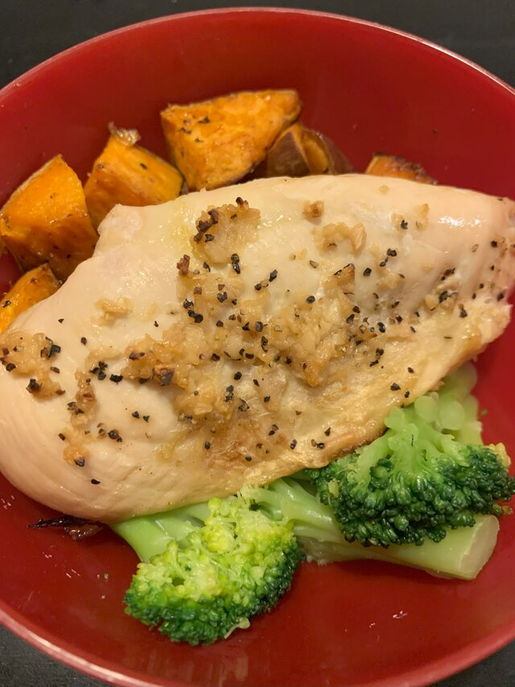
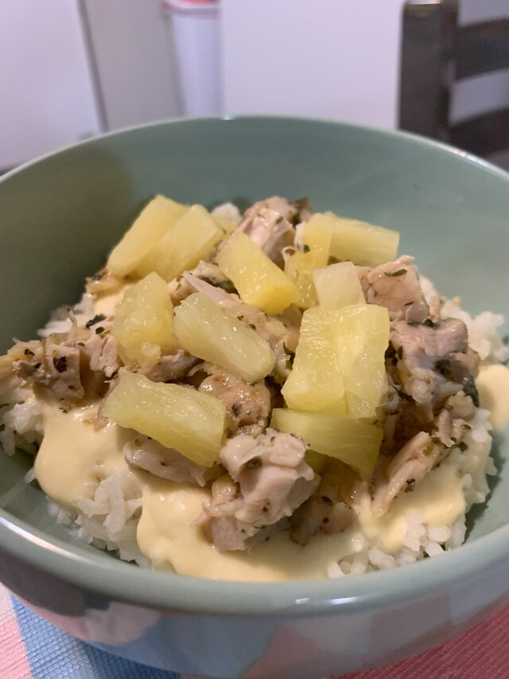
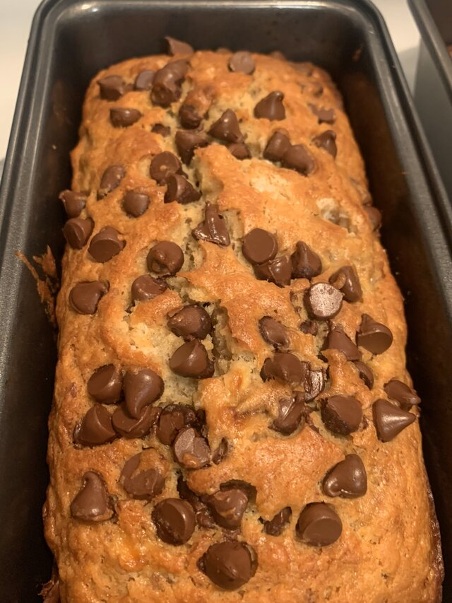

Dinner

Sweet Potato Chicken
Ingredients:
- 1 sweet potato
- 1 frozen chicken breast
- olive oil
- seasonings: garlic powder, pepper, salt, paprika
- 1 cup frozen broccoli
- butter
Recipe:
- Preheat the oven to 400°F. In a glass or metal pan/cooking sheet spray or add parchment paper to the bottom.
- Wash your sweet potato and cut it into cubes. Place on a cooking pan and drizzle with olive oil. Season potatoes with salt, pepper and paprika. Toss and move to combine and coat. Place chicken breast beside the potato chunks. Season with pepper and garlic powder.
- Cook for 20 minutes, flip/rotate potatoes, and cook for another 20 minutes.
- Take out of the oven and start on your broccoli. Place broccoli in a microwave safe bowl. Add water to cover broccoli and cook in the microwave for 2 minutes or until tender. Add butter and season with salt.
- Plate and dig in!
Simple Hawaiian Haystacks
Ingredients:
- 1 cup rice
- 1 cup water
- 1 cup chicken broth
- pinch of salt
- pepper, garlic powder
- 1 chicken breast
- 4 oz sour cream
- ½ cup chicken broth
- 1 can of cream of chicken
- canned pineapple
Recipe:
- Preheat your oven to 400°F then start on your rice. Clean your rice. Add rice, 1 cup water, and 1 cup of chicken broth to your rice cooker. Let it cook.
- Season your chicken breast and cook for 30 minutes. In 20 minutes start on your sauce.
- In a saucepan, whisk together cream of chicken, sour cream, and chicken broth over medium heat until combined and even.
- Shred your chicken and add it to the sauce.
- Pour the sauce over your rice, add pineapple, and enjoy it warm!

Dessert

Ava's Banana Bread
Ingredients:
- 2-3 very ripe bananas
- ⅓ cup butter
- ½ teaspoon baking soda
- 1 pinch salt
- 1 cup sugar
- 1-2 large eggs
- 2 teaspoons vanilla
- 1 ½ cup flour
- ½ cup chocolate chips
- dash of cinnamon
Recipe:
- Preheat the oven to 350°F. Mash the bananas and melted butter with a fork.
- Mix in the remaining ingredients: baking soda, salt, sugar, eggs, and extract. Stir and mix in the flour. Add the chocolate chips and cinnamon.
- Pour the batter into your sprayed or greased loaf pan.
- Bake for 55-60 minutes or until a toothpick inserted into the center is clean.
- Let bread cool and go bananas!